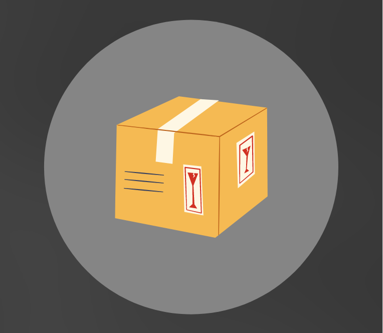
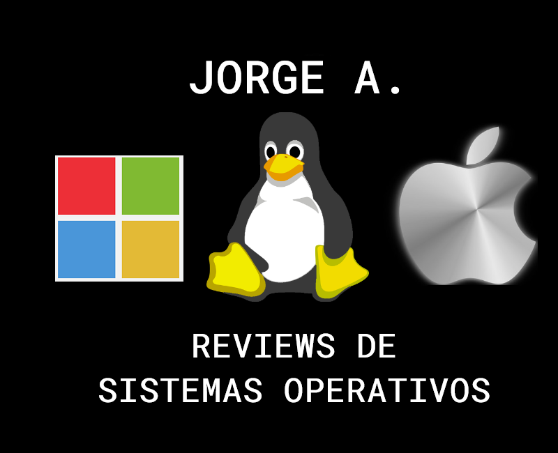
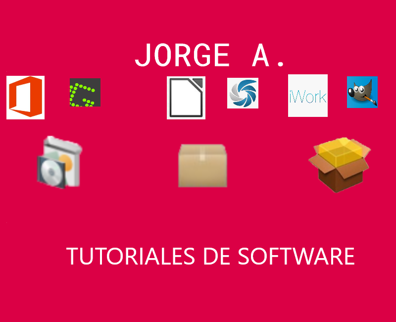
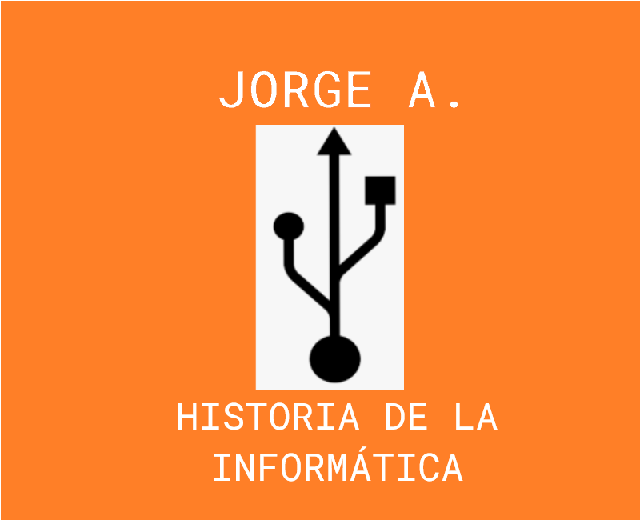
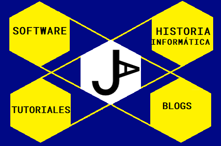

¿Alguna pregunta? Solicite contacto
Por favor si necesita saber más no dude en contactar conmigo
Técnico de Sistemas Microinformáticos y Redes
Soy un estudiante de Informática al cuál le encanta todo lo relacionado con los Sistemas Operativos y Páginas Web pero también cualquier otro campo tecnológico. En 2020 experimenté por primera vez, una experiencia laboral de larga duración, que me ha marcado profesional y personalmente, mis prácticas en empresa de Grado Medio. Quiero seguir creciendo, de momento sigo estudiando por mi cuenta porque es lo que ahora mismo está en mi mano.
Edad : 22
Teléfono : solicitar en formulario
Web : Web de Informática
Email : correo en CVs y en formulario
Residencia : Madrid, Comunidad de Madrid
Situación laboral actual : Desempleado, buscando empleo
Campos laborales : Informática, Logística y Comercio
Otros datos : Inscrito en Garantía Juvenil (Colectivo Bonificable)
Ideas de negocio Web, Marketing (SEO,SMO...), manejo de Wordpress (plugins, temas...) y pruebas en hostings.
Principios de programación: representaciones (ordinogramas, pseudocódigo), Javascript y su optimización.
Aplicaciones Ofimáticas y Web, Redes Locales, Sistemas Operativos Monopuesto y en Red, Seguridad Informática y Servicios en Red.
Funciones: resolución de incidencias, despliegue de imágenes de sistemas operativos, mantenimiento de equipos y aprovisionamiento de componentes hardware.
Funciones: programación con arduino, manualidades, talleres de storymaker y creación de juegos de rol con RPG Maker.
Funciones: manipulación de mercancía, picking, preparación de pedidos y empaquetado.
Funciones: reposición de productos, manipulación de mercancía, limpieza y atención al cliente.

Tengo pensado crear contenido sobre Informática en la web a lo largo del tiempo. También estoy construyendo mi proyecto personal.




En esta página mi objetivo es tratar diferentes temas de informática basándome en lo que he aprendido como estudiante, en mis prácticas laborales y en lo que aprendo por mi cuenta. Curiosidades, tips para tratar de acercar la Informática a las personas.
También estaré informando sobre el avance de mi proyecto personal, estoy trabajando en el proceso a raiz del curso
de publicación de páginas web (2021), necesito asesoría y en función de ello el proyecto tomará una dirección u otra, pero mi idea es seguir adelante.
El teléfono se proporciona al rellenar el formulario
Madrid, Comunidad de Madrid, España
Disponible en los CV y al rellenar el formulario
Por favor si necesita saber más no dude en contactar conmigo